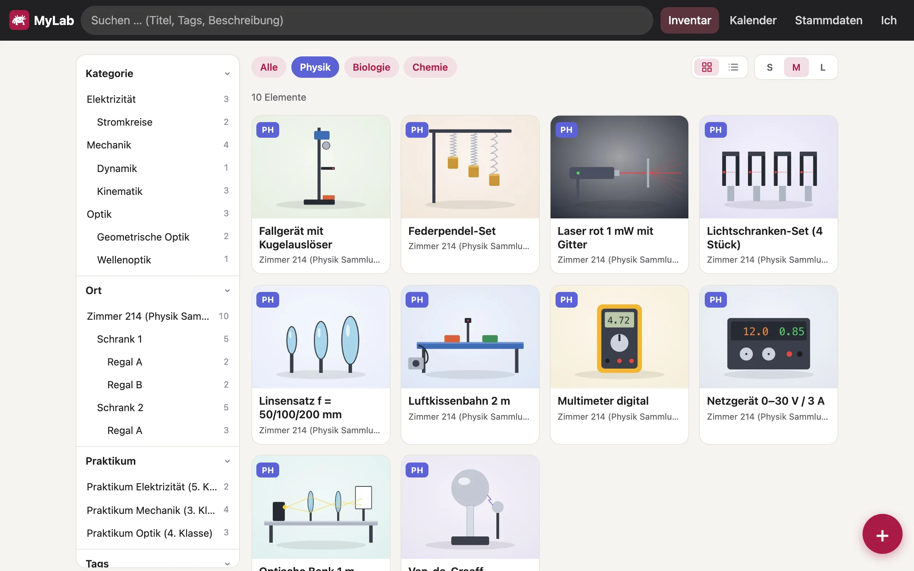
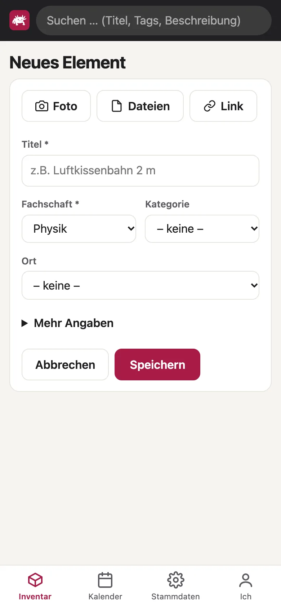
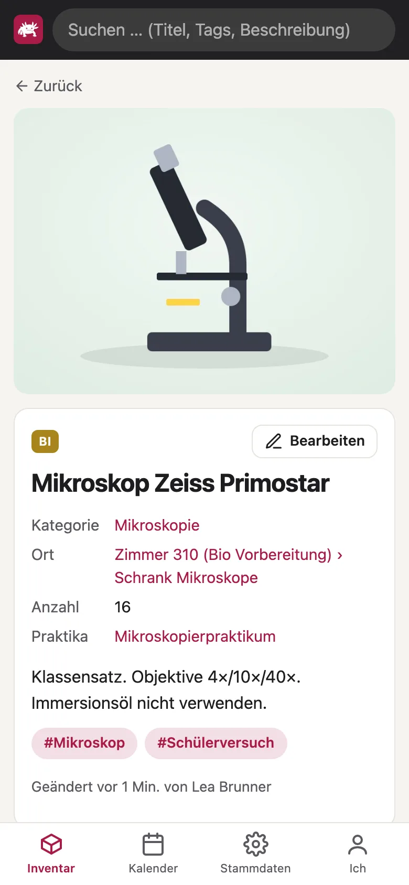
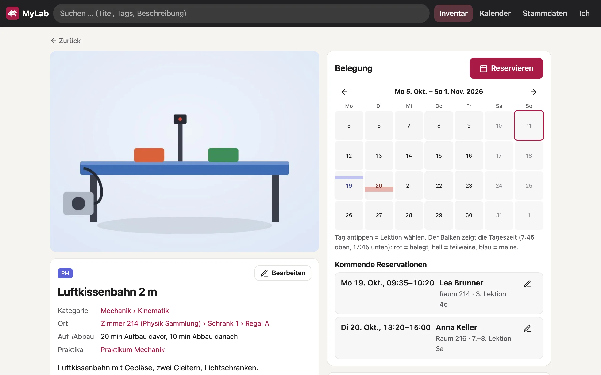
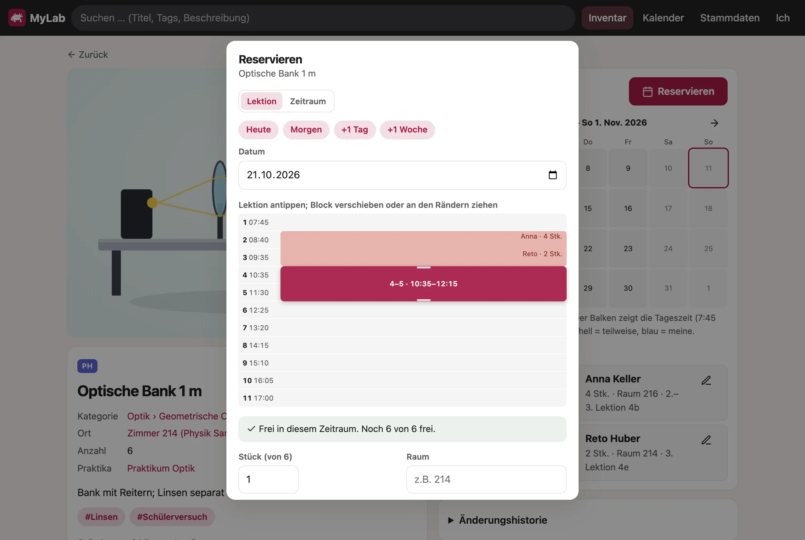
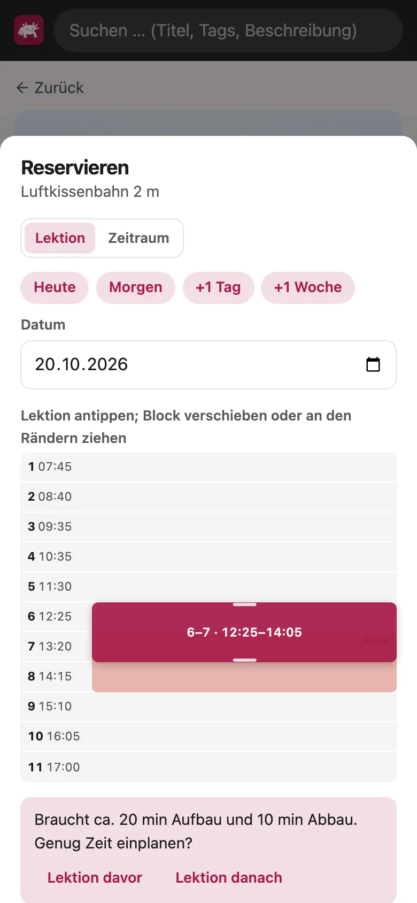
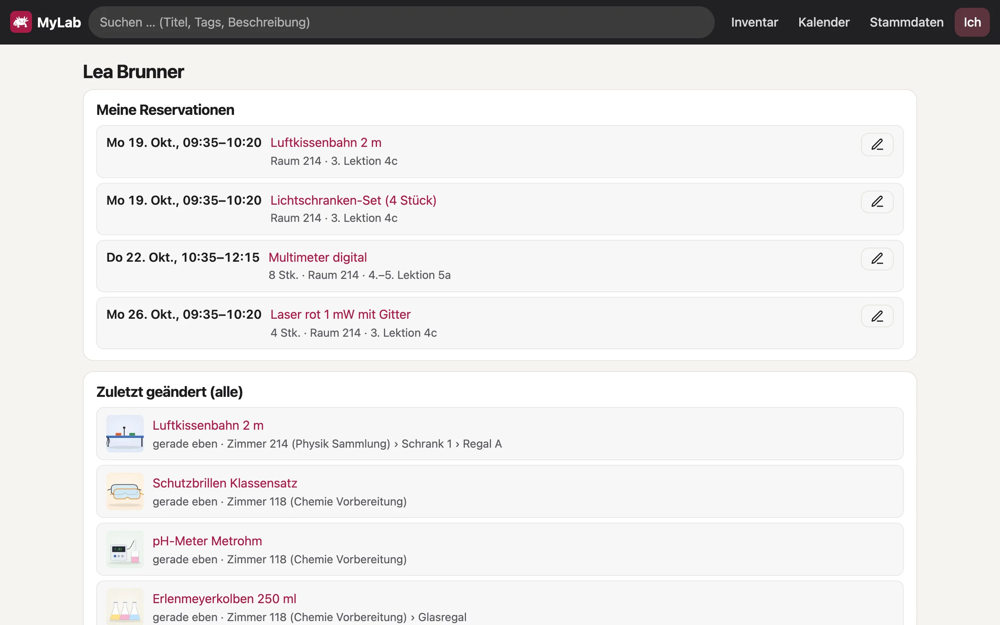
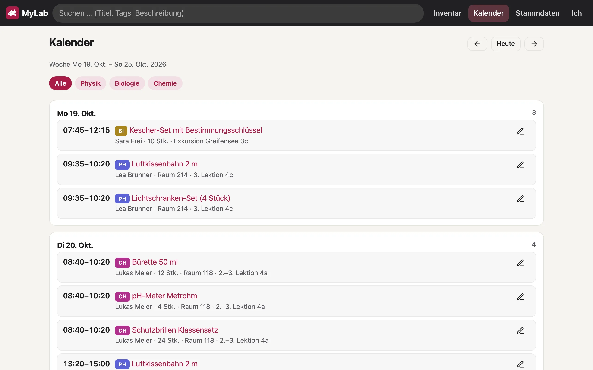
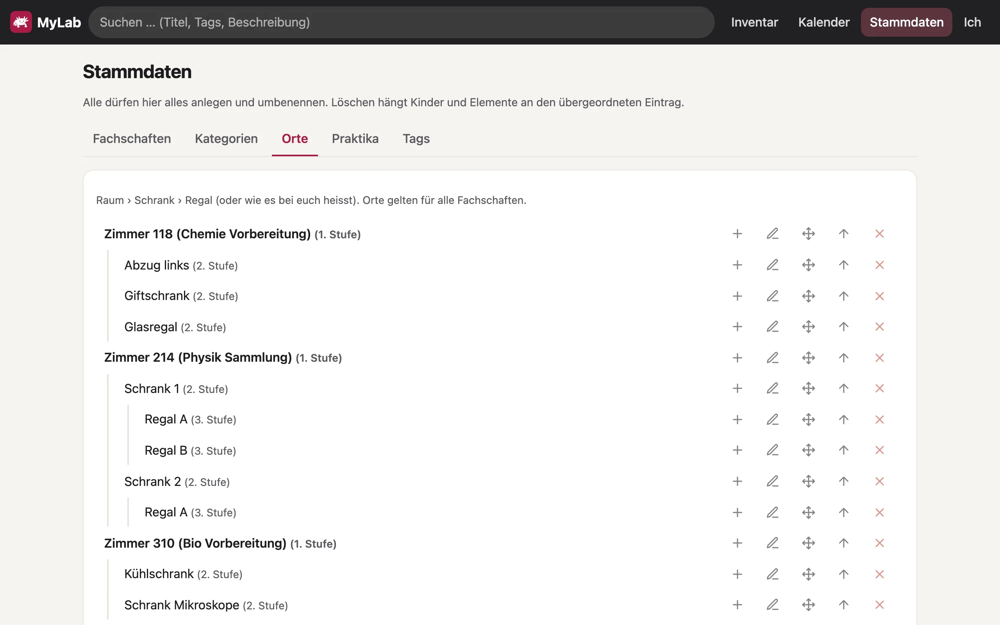

So geht’s
Vom ersten Login bis zur Reservation fürs Praktikum: die häufigsten Handgriffe in MyLab, Schritt für Schritt. Suchst du etwas Bestimmtes, spring einfach über das Inhaltsverzeichnis hin. Alle Bilder stammen aus der Demo-Version mit erfundenen Daten.
Erste Schritte
Anmelden
- Öffne MyLab im Browser, am Computer oder auf dem Handy.
- Tipp auf Mit Schulkonto anmelden und wähl dein Microsoft-Konto der Schule. Ein eigenes Passwort für MyLab gibt es nicht.
- Fertig: Beim ersten Login entsteht dein Konto von selbst, einrichten musst du nichts.
Noch in Abklärung: Ob MyLab das Schulkonto für die Anmeldung nutzen darf, ist noch offen.
Fachschaft festlegen
Unter Ich › Profil deine Fachschaft wählen und Speichern. Danach zeigen Inventar und Kalender zuerst dein Fach und neue Elemente bekommen es als Vorgabe. Die anderen Fächer sind mit einem Klick auf Alle weiterhin da.
Als App aufs Handy
- iPhone: MyLab in Safari öffnen, Teilen antippen, dann Zum Home-Bildschirm.
- Android: MyLab in Chrome öffnen, im Menü App installieren oder Zum Startbildschirm hinzufügen.
Hell oder dunkel? MyLab folgt deinem Gerät. Farbschema und Akzentfarbe kannst du unter Ich pro Gerät ändern.
Bedienung
Am Computer stehen die Bereiche oben in der dunklen Leiste, auf dem Handy unten: Inventar, Kalender, Stammdaten und Ich. Das Suchfeld oben ist überall da. Mit dem runden + unten rechts im Inventar legst du ein neues Element an.
| Bereich | Wofür |
|---|---|
| Inventar | Material suchen, filtern, öffnen und erfassen |
| Kalender | Alle Reservationen einer Woche im Überblick |
| Stammdaten | Fachschaften, Kategorien, Orte, Praktika und Tags verwalten |
| Ich | Eigene Reservationen, zuletzt geänderte Elemente, Profil, Farbschema, Papierkorb |
Material finden
Das Inventar zeigt alle Elemente als Kacheln mit Bild, Titel und Ort.

- Suchen: Tipp ins Suchfeld oben. MyLab sucht in Titel, Beschreibung und Tags, die Liste passt sich laufend an.
- Fach wählen: Die Pillen über der Liste: Alle oder eine Fachschaft.
- Filtern: Links nach Kategorie, Ort, Praktikum oder Tags. Die Zahl daneben zeigt, wie viele Elemente übrig bleiben; mehrere Tags gelten zusammen. Auf dem Handy öffnet Filter dieselbe Auswahl.
- Ansicht: Oben rechts zwischen Kacheln und Liste wechseln, Grösse S, M oder L.
Lange Listen laden in Portionen: Unten holt Mehr anzeigen die nächsten.
Element erfassen
Am schnellsten geht es mit dem Handy vor dem offenen Schrank. Pflicht sind nur Titel und Fachschaft.


- Im Inventar auf + tippen.
- Foto antippen und fotografieren. Mehrere Fotos gehen auch, das erste wird zum Titelbild.
- Titel eintragen, etwa «Luftkissenbahn 2 m».
- Kategorie und Ort wählen. Die zuletzt verwendeten stehen zuoberst. Fehlt etwas: Ganz unten in der Auswahl legst du mit + Neue Kategorie … bzw. + Neuer Ort … gleich einen neuen Eintrag an.
- Speichern.
Mehr Angaben
Unter Mehr Angaben stehen die restlichen Felder (am Computer geht das bequemer):
- Beschreibung mit Aufbau, Hinweisen und Stolpersteinen.
**fett**und Listen mit-werden formatiert. - Anzahl, z.B. 16 bei einem Klassensatz Mikroskope. Dann kann man einzelne Stück reservieren.
- Inventar-Nr., falls es eine gibt.
- Aufbau davor und Abbau danach in Minuten. MyLab erinnert beim Reservieren dran.
- Tags: eintippen und mit ↩ oder Komma bestätigen.
- Praktika und Ähnliche Elemente, z.B. Luftkissenbahn und Lichtschranken.
Bearbeiten & Anhänge
Auf der Seite eines Elements oben rechts auf Bearbeiten. Du kannst alles ändern, auch Fachschaft, Kategorie und Ort.

- Foto und Dateien laden Bilder, Videos, PDF- und Word-Dateien hoch. Bilder verkleinert MyLab selbst.
- Link hängt z.B. ein YouTube-Video an. Das geht erst nach dem ersten Speichern.
- Neben jedem Anhang: Als Titelbild, Umbenennen, Entfernen.
Grosse Videos: Bis 500 MB gehen direkt. Längere am besten auf YouTube oder Stream ablegen und als Link anhängen.
Reservieren
Reserviert wird auf der Seite des Elements. Die Belegung rechts zeigt vier Wochen, jede Tageskachel hat einen Balken für die Tageszeit: rot belegt, hell teilweise belegt, blau deine.
Nach Lektion
- Tipp in der Belegung auf den Tag. Es öffnet sich das Lektionsraster.
- Erste Lektion antippen. Für eine Doppellektion die zweite antippen oder den Block unten länger ziehen.
- Stimmt die Zeit noch nicht, verschieb den Block. Heute, Morgen, +1 Tag und +1 Woche wechseln den Tag.
- Bei mehreren Stück die Stückzahl wählen, dazu allenfalls Raum, Klasse / Lektion und eine Notiz.
- Reservieren.

Für längere Zeit
Oben im Dialog auf Zeitraum wechseln und Von und Bis setzen oder Ganze Tage wählen. So geht auch eine Ausleihe über die Woche oder für eine Exkursion.
Wenn es schon belegt ist
MyLab zeigt sofort Bereits reserviert mit Namen und die nächsten freien Zeiträume. Ein Klick auf einen Vorschlag verschiebt deine Reservation dorthin. Hast du es mit der Kollegin abgesprochen: Trotzdem eintragen.
Auf- und Abbau
Braucht ein Element Aufbauzeit, erscheint ein Hinweis mit Lektion davor und Lektion danach. Ein Tipp nimmt sie dazu. Ob das Zimmer dann frei ist, weiss MyLab nicht.

Reservation ändern oder löschen
Deine Reservationen findest du unter Ich › Meine Reservationen, alle eines Elements auf seiner Seite unter Kommende Reservationen. Der Stift öffnet die Reservation.

- Deine Reservation: Zeit, Stückzahl, Raum oder Notiz ändern und Speichern oder Löschen.
- Reservation einer Kollegin: nur ansehen. Ändern und löschen kann nur, wer reserviert hat. Mit Mail an … schreibst du ihr, z.B. um eine andere Lektion abzusprechen.
Früher zurückgebracht? Dann deine Reservation kürzen oder löschen: So sehen alle, dass es wieder frei ist.
Kalender
Der Kalender zeigt eine Woche: pro Tag, was wann bei wem ist, mit Raum, Lektion und Stückzahl.

- Mit den Pfeilen blättern, Heute springt zurück in die aktuelle Woche.
- Die Pillen wählen das Fach oder Alle.
- Ein Klick auf ein Element öffnet seine Seite, der Stift die Reservation.
Stammdaten
Unter Stammdaten legt ihr als Fachschaft eure Ordnung fest. Reiter: Fachschaften, Kategorien, Orte, Praktika, Tags.

| Knopf | Was er tut |
|---|---|
| + | Unterpunkt anlegen, z.B. ein Regal in einem Schrank |
| Stift | Umbenennen |
| Kreuzpfeil | Verschieben unter einen anderen Eintrag |
| Pfeil nach oben | In der Reihenfolge nach oben |
| × | Löschen. Du wählst, ob nur der Eintrag weggeht (sein Inhalt rückt eine Stufe hoch) oder der Inhalt mit: Dann landen die Elemente im Papierkorb. |
- Kategorien haben drei Stufen und gehören zu einer Fachschaft.
- Orte gelten für alle: Raum › Schrank › Regal oder wie es bei euch heisst.
- Tags kannst du umbenennen, einer anderen Fachschaft zuordnen und zusammenlegen (z.B. «Messgerät» und «Messgeräte»).
- Bei jeder Fachschaft kannst du eine Fachschafts-Mail eintragen, z.B. die der Assistenz. Sie steht dann bei Mail … als Vorschlag.
Historie & Papierkorb
Eine Änderung rückgängig machen
- Auf der Seite des Elements ganz unten Änderungshistorie aufklappen.
- Jeder Eintrag zeigt, wer wann welches Feld geändert hat, mit altem und neuem Wert.
- Rückgängig setzt das Feld auf den alten Wert zurück.
Element löschen und wiederherstellen
- Im Element Bearbeiten, unten Löschen. Das Element landet im Papierkorb.
- Unter Ich › Papierkorb kannst du es wiederherstellen.
- Erst endgültig löschen im Papierkorb entfernt es, samt Fotos und Dateien.
Mails
MyLab verschickt selbst keine Mails. Willst du jemanden informieren, tippst du im Reservieren-Dialog auf Mail …. Dein Mailprogramm öffnet sich mit fertigem Text: Element, Zeit, Zimmer, Notiz und ein Link zum Element.
- Als Empfänger schlägt MyLab die Fachschafts-Adresse vor und wer das Element gleichzeitig, davor oder danach hat.
- Alle anderen, die MyLab schon benutzt haben, findest du über Weitere Person. Weitere Adressen ergänzt du im Mailprogramm.
- Bei der Reservation einer Kollegin heisst der Knopf Mail an … und schreibt direkt ihr.
- Trägst du trotz Konflikt ein, fragt MyLab nach dem Speichern, ob die Betroffenen Bescheid bekommen sollen. Sie sind dann schon angehakt.
Wenn etwas hakt
- Ich sehe nur ein Fach.
- Das ist deine Fachschaft als Standard. Die Pille Alle über der Liste zeigt alles.
- Eine Reservation lässt sich nicht ändern.
- Dann ist es die Reservation von jemand anderem: Ändern und löschen kann nur, wer sie angelegt hat. Mit Mail an … fragst du nach.
- Beim Reservieren steht «Bereits reserviert».
- Das Element ist in dieser Zeit schon ganz unterwegs. Darunter stehen die nächsten freien Zeiträume. Nach Absprache geht auch Trotzdem eintragen. Danach fragt MyLab, ob die anderen per Mail Bescheid bekommen sollen.
- Ein Foto lädt nicht hoch.
- Bilder dürfen bis 25 MB gross sein, Dokumente 50 MB, Videos 500 MB. Bei schwachem WLAN das Foto lieber später am Computer hochladen.
- Ich habe etwas versehentlich geändert.
- Kein Problem: In der Änderungshistorie des Elements den Eintrag suchen und Rückgängig. Gelöschte Elemente liegen unter Ich › Papierkorb.
- Die App sieht nach einem Update komisch aus.
- Seite einmal neu laden. Auf dem Handy die App schliessen und neu öffnen.